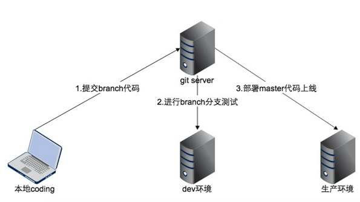
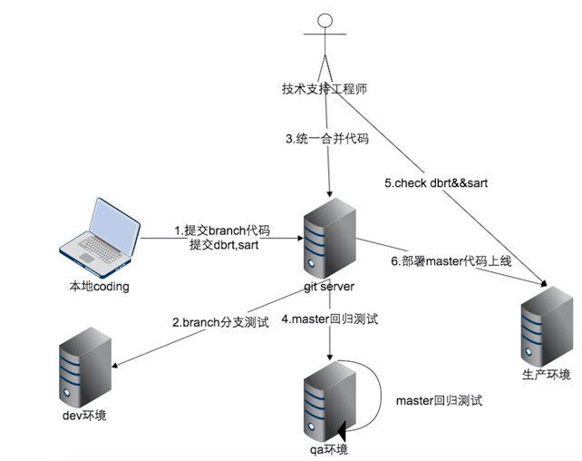
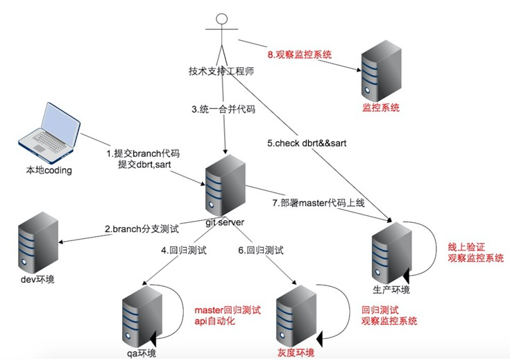
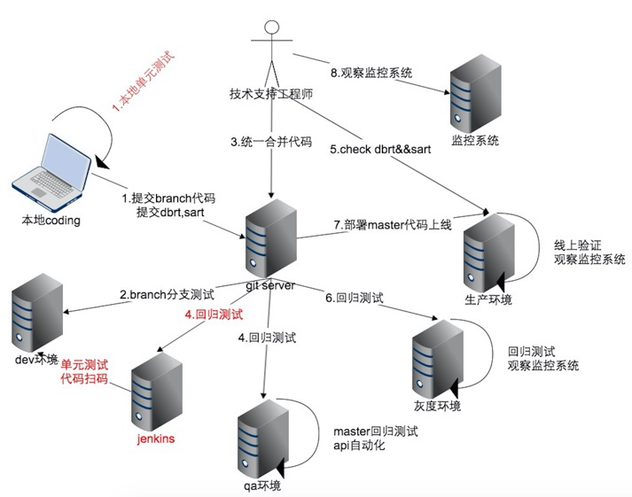

这几天在TesterHome上看到有人关于测试如何保证项目发布质量的提问，同时新达达北京研发团队最近也有一些关于后端代码上线后质量不可控的小烦恼，于是将我加入达达后对上线流程的优化做了以下总结，供大家参考。
上线流程的演进
第一阶段 上线流程从无到有
我是达达研发团队的第一个测试工程师，在我加入之前研发团队人还很少，大概4个后端工程师和2个android工程师，当时后端代码上线的流程比较简单，从开发工程师coding到代码最终上线一共会经过3个环境：工程师本地开发环境 -> dev测试环境 -> 生产环境。开发工程师完成代码开发，在dev测试环境自测后会把代码push到对应仓库的master分支上，等晚上9点上线。
流程及流程图-最初
- 开发工程师提交branch分支到git server
- 测试工程师在dev环境部署branch分支测试
- 代码测试通过后运维工程师部署代码上线
- 线上验证功能

存在的问题
- dba在代码上线前还未完成dbrt [^dbrt] 导致服务启动异常
- 运维工程师在代码上线前还未完sart [^sart] 导致服务启动异常
- 代码合并问题导致服务启动异常
- master分支上有未经过测试的代码，且代码有bug造成功能异常
- 开发工程师的dbrt和sart提交时内容不完整导致服务器启动异常
优化方案
- 任务单管理，将dbrt，sart通过任务管理工具管理起来，dba和运维工程师完成任务后，技术支持工程师确认完成无误才会开始上线
- master合并权限控制，将合并branch分支代码到master这件事交由技术支持工程师统一负责，保证代码合并质量，同时避免有未测试的代码上线
- 增加预发布环节，搭建一套独立的qa环境，所有在生产环境进行的代码部署，配置变更，服务重启等动作都会在这个环境上进行预演，测试工程师确认没有问题后才会进行上线
- 线上问题review机制
流程图-优化后
- 开发工程师提交branch分支到git server
- 测试工程师在dev环境部署branch分支测试
开发工程师发送上线申请及提交dbrt sart，由技术支持工程师统一合并代码代码合并完成后部署qa环境进行回归测试代码上线前检查线上dbrt和sart的是否完成- 以上环节都确认无误后部署代码上线
- 线上验证功能
提示：
灰底部分为流程新增部分

经验总结
- 代码合并冲突需要认真解决并验证解决效果
- 上线的代码分支和测试回归的分支必须是同一个分支
- 生产环境的代码，数据，配置变更需要在上线前验证无误后才能进行操作
第二阶段 自动化回归及监控体系建设
第一阶段优化方案全都完成后，上线流程基本成型，从开发工程师开始coding到代码最终上线会经过4个环境：工程师本地开发环境 -> dev测试环境 -> qa预发布环境 -> 生产环境。随着业务的增长，开发团队规模变大，我们遇到了新的问题。
存在的问题
- 线上功能变多，上线频率较高，回归测试的工作量变大
- 回归测试不充分，非核心功能偶尔会有问题
- 上线后非核心功能的异常，有时候无法马上发现
优化方案
- 针对核心业务开展api自动化，靠api自动化来提高回归测试效率及覆盖率（这一阶段的自动化回归主要针对qa环境）
- 完善监控，基础架构组提供了一套基于日志的监控系统，关于监控系统的原理及实现可以参考文章《达达日志系统-收集》
- 搭建灰度发布环境，这个环境是一个mini版的生产环境，有1%的真实流量在该环境上跑，代码上灰度环境后如果有异常，能通过上面的监控系统得知
流程及流程图
- 开发工程师提交branch分支到git server
- 测试工程师在dev环境部署branch分支测试
- 开发工程师发送上线申请及提交dbrt sart，后由技术支持工程师统一合并代码
- 代码合并完成后部署qa环境进行回归测试
在qa环境执行api自动化- 代码上线前检查线上dbrt和sart的是否完成
以上环节都确认无误后部署代码上灰度环境测试工程师在灰度环境回归测试技术支持观察监控系统数据变化- 以上环节都没有问题，代码在灰度环境观察一小时上正式环境
- 线上验证功能
技术支持工程师上线后观察LB的日志以及监控系统数据变化

经验总结
- api自动化能够提高回归测试的效率，但是需要平衡好资源投入和覆盖率的关系
- 完善的监控系统能够让我们在大量用户反馈之前就发现问题
- 灰度发布能够尽早的发现问题，避免造成大面积的影响
第三阶段 质量保障过程化
到此，整个上线流程中代码会经过以下几个环境，工程师本地开发环境 -> dev测试环境 -> qa预发布环境 -> 灰度发布环境 -> 生产环境，功能全部验证通过后才会部署代码上线。大家都知道，一个项目会经过需求 -> 开发设计 -> 编码 -> 测试-> 上线 这几个阶段，在整个生命周期中前问题越早发现，修复问题的成本越低。除此以外，在一些开发周期比较长的项目中，经常会遇到项目过程中没有和master做rebase，导致最终合并代码上线的时候冲突很多，解决冲突比较好费时间精力，冲突解决完以后还需要对master分支做一次全量回归，耗费人力。
存在的问题
- 开发周期长的项目没有定期和master做rebase导致合并代码时冲突很多，耗费人力解决冲突级回归测试
- qa环境和灰度环境发现bug，修复起来成本较高
成本高的原因：后端代码通常是在下午2点-4点的流量低峰期上线，过了这个时间，项目上线就需要在晚上9点以后进行，到时候开发工程师，测试工程师，运维工程师等都需要在，确保上线正常。
优化方案
- 部分核心业务会有单元测试，开发分支push到git的时候会在本地触发单元测试，全部通过后才会提交成功
- 针对核心业务代码，当分支代码被合并到master后会自动部署测试环境，并且触发jenkins上部署的代码扫描任务及自动化测试任务
- 每周用2小时针对代码静态扫描平台扫出来的问题进行优化，目标为保持问题数量不高于最初
- 开发周期长的项目在每次代码上线后，需要对master分支做rebase
流程及流程图
- 开发工程师提交branch分支
通过单元测试后才被push到git server - 测试工程师在dev环境部署branch分支测试
- 开发工程师发送上线申请及提交dbrt sart，后由技术支持工程师统一合并代码
代码合并入master分支后出发代码扫描，单元测试，通过后自动部署测试环境（目前只覆盖java项目）- 代码合并完成后部署qa环境进行回归测试
- 在qa环境执行api自动化
- 代码上线前检查线上dbrt和sart的是否完成
- 以上环节都确认无误后部署代码上灰度环境
- 测试工程师在灰度环境回归测试
- 技术支持观察监控系统数据变化
- 以上环节都没有问题，代码在灰度环境观察一小时上正式环境
- 线上验证功能
- 技术支持工程师上线后观察LB的日志以及监控系统数据变化

经验总结
- 在尽可能早的阶段发现问题能够避免上线时候手忙脚乱
- 代码静态扫描，单元测试，自动化测试，持续集成是提高效率和质量的好帮手
- 开发周期长的项目，定期做rebase会减少后面很多不必要的麻烦
我的一些思考
作为测试工程师，如果只是关注如何把项目测试完成，用什么工具和框架能够做自动化测试，如何做性能测试，这些是不够的，这种情况下能做的事情比较局限，而且也无法保证项目上线后的结果。而从质量保障体系的角度去思考，会发现一套合适的项目研发流程，好的研发架构，完善的自动化工具及监控平台对最终交付的结果影响很大。
天下武功唯快不破，质量保障体系也是如此，从提升效率的角度来说，可做的不仅是各类自动化，再我看来可以分为两个维度：加快产品迭代和提高问题暴露。其中构建打包分发平台，自动部署测试环境，打通用例，缺陷和自动化测试系统等属于前者；代码静态扫描，单元测试，各类自动化测试，持续集成属于后者。每个公司的团队规模，发展所处阶段阶段不一样，需要根据具体的情况来制定流程及使用工具，一开始就追求大而全有时候反而会适得其反。
脚注
[^dbrt]: DateBase Administration Request Tracker，主要是指正对数据库系统的需求，包括create table，alert table 以及数据库维护数据等相关的需求
[^sart]: System Administration Request Tracker，主要是开发环境，中间件等各种系统及环境配置修改，包括os，lb，nginx，memcached，redis等